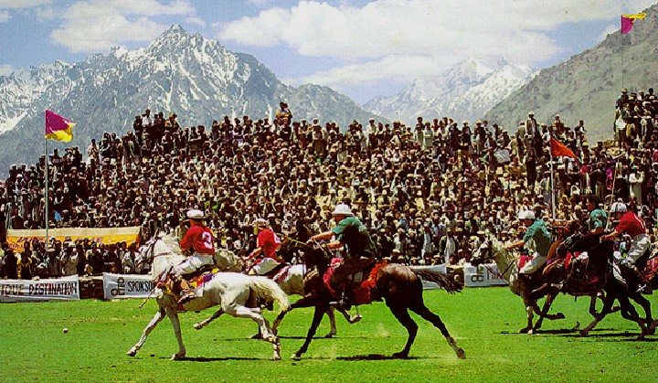
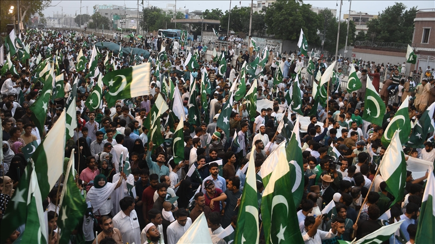
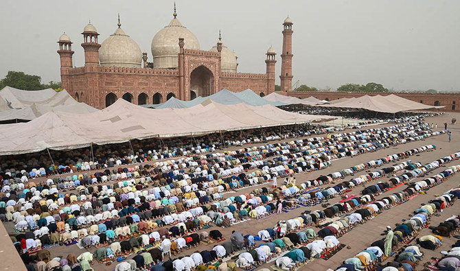
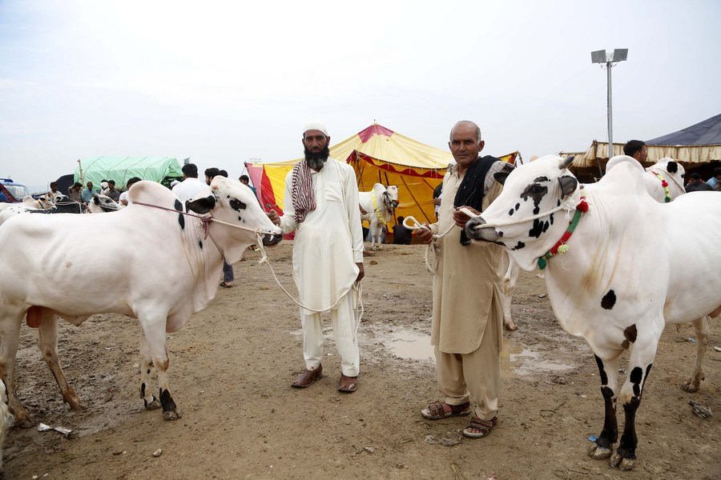
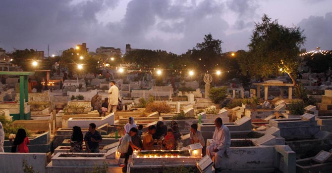
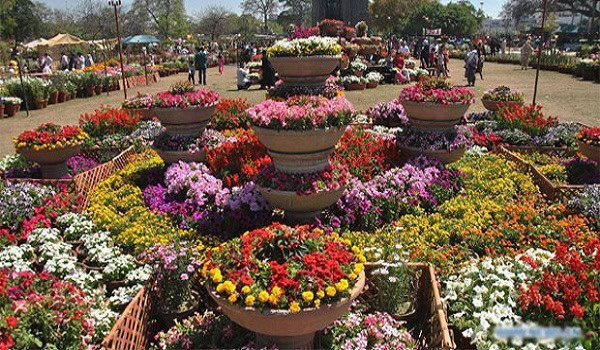
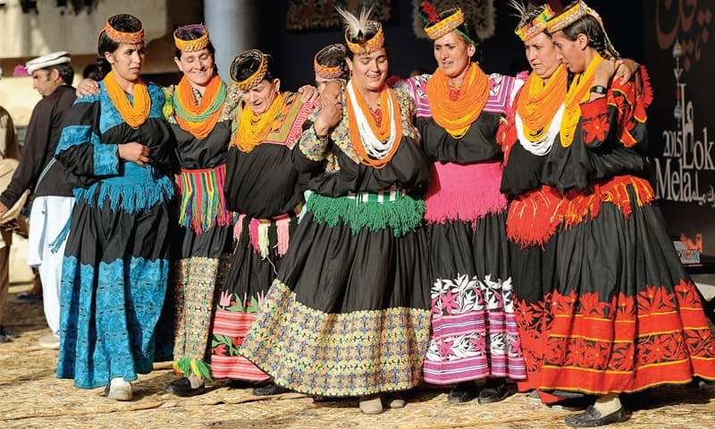

A Calendar of Celebration
Pakistan's festivals range from ancient spring celebrations to grand Islamic observances and thrilling sporting competitions.
Basant Festival
Basant is a traditional spring festival celebrated primarily in Punjab, marking the arrival of spring with kite-flying. The skies above Lahore fill with thousands of colourful kites, accompanied by music, food, and festivities. The festival symbolises joy, renewal, and community.
When
Late January to March, depending on the arrival of spring.

Shandur Polo Festival
Held at the world's highest polo ground at Shandur Pass (3,700 m), this annual festival pits teams from Chitral and Gilgit-Baltistan against each other in a thrilling polo match. The festival is accompanied by traditional music, dance, and horse racing, drawing visitors from around the world.
When
July — typically the first week.

More Pakistani Festivals

Independence Day
Celebrated on 14 August with flag-hoisting ceremonies, parades, fireworks, and national pride across the country.

Eid ul-Fitr
The festival marking the end of Ramadan, celebrated with prayers, feasting, new clothes, and giving gifts to children.

Eid ul-Adha
The Festival of Sacrifice, honouring Ibrahim's willingness to sacrifice his son. Families share meat with neighbours and the poor.

Shab-e-Barat
The Night of Fortune — Muslims offer prayers, visit graves of ancestors, and light fireworks across Pakistani cities.

Jashan-e-Baharan
Spring festivals across the country celebrating the blooming of fruit trees, particularly famous in the apricot orchards of Hunza.

Lok Mela
A national folk festival held in Islamabad showcasing crafts, music, and cuisine from all four provinces and regions of Pakistan.